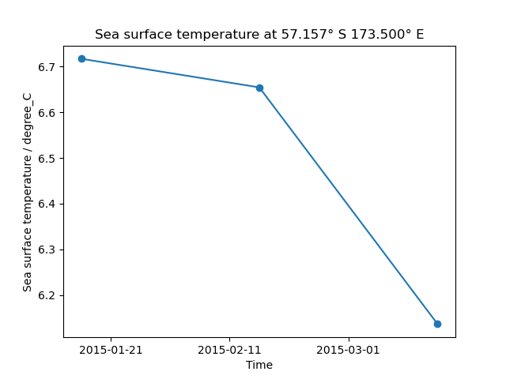

Note
Click here to download the full example code
Load a time series of data from the NEMO model¶
This example demonstrates how to load multiple files containing data output by the NEMO model and combine them into a time series in a single cube. The different time dimensions in these files can prevent Iris from concatenating them without the intervention shown here.
from __future__ import unicode_literals
import matplotlib.pyplot as plt
import iris
import iris.plot as iplt
import iris.quickplot as qplt
from iris.util import promote_aux_coord_to_dim_coord
def main():
# Load the three files of sample NEMO data.
fname = iris.sample_data_path("NEMO/nemo_1m_*.nc")
cubes = iris.load(fname)
# Some attributes are unique to each file and must be blanked
# to allow concatenation.
differing_attrs = ["file_name", "name", "timeStamp", "TimeStamp"]
for cube in cubes:
for attribute in differing_attrs:
cube.attributes[attribute] = ""
# The cubes still cannot be concatenated because their time dimension is
# time_counter rather than time. time needs to be promoted to allow
# concatenation.
for cube in cubes:
promote_aux_coord_to_dim_coord(cube, "time")
# The cubes can now be concatenated into a single time series.
cube = cubes.concatenate_cube()
# Generate a time series plot of a single point
plt.figure()
y_point_index = 100
x_point_index = 100
qplt.plot(cube[:, y_point_index, x_point_index], "o-")
# Include the point's position in the plot's title
lat_point = cube.coord("latitude").points[y_point_index, x_point_index]
lat_string = "{:.3f}\u00B0 {}".format(
abs(lat_point), "N" if lat_point > 0.0 else "S"
)
lon_point = cube.coord("longitude").points[y_point_index, x_point_index]
lon_string = "{:.3f}\u00B0 {}".format(
abs(lon_point), "E" if lon_point > 0.0 else "W"
)
plt.title(
"{} at {} {}".format(
cube.long_name.capitalize(), lat_string, lon_string
)
)
iplt.show()
if __name__ == "__main__":
main()
Total running time of the script: ( 0 minutes 0.335 seconds)